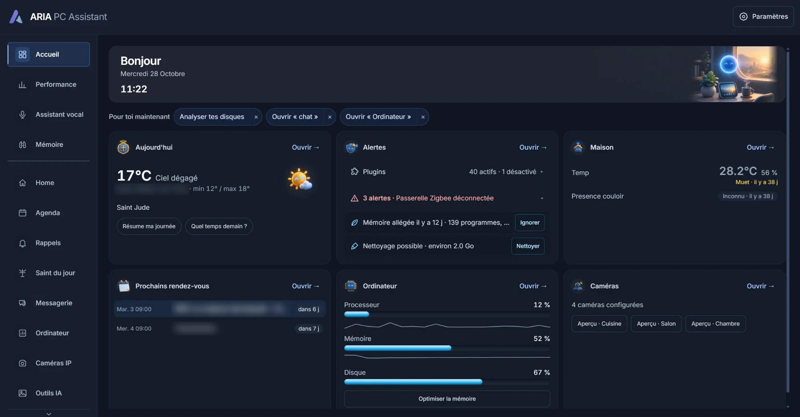

Assistant personnel local
ARIA
ARIA PC Assistant : une conversation centrale qui comprend tes demandes en français, appelle les outils de ton PC et répond sous la bonne forme plutôt que par un mur de texte. L'accueil rassemble d'un coup d'œil météo, alertes, maison, agenda, ordinateur et caméras.
- Texte, tableaux, schémas, quiz, cartes mentales et fiches selon la demande
- Des plugins activables : fichiers, système, agenda, rappels, messagerie, domotique
- Les actions sensibles montrent ce qui va se passer et peuvent être refusées
